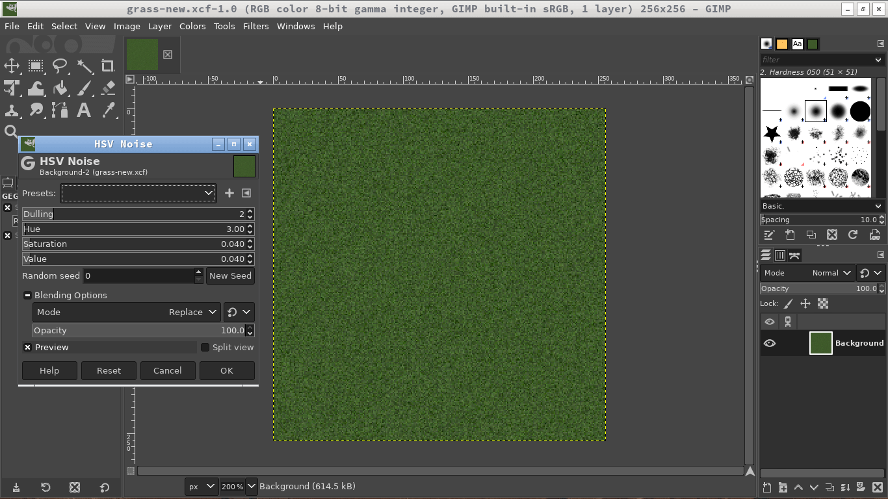
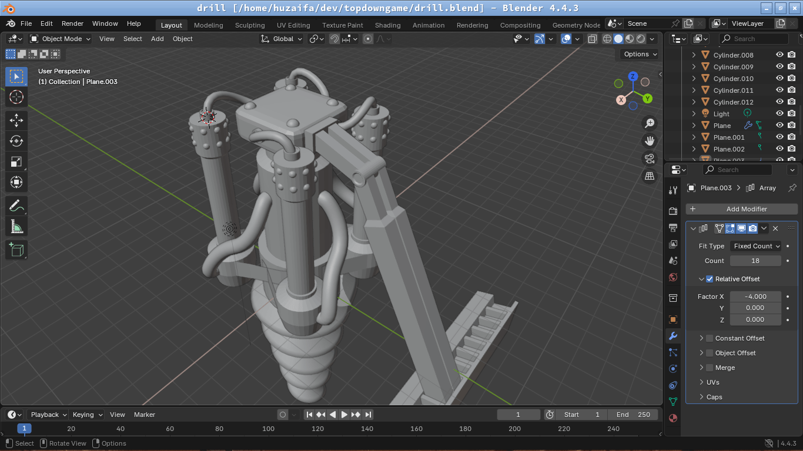
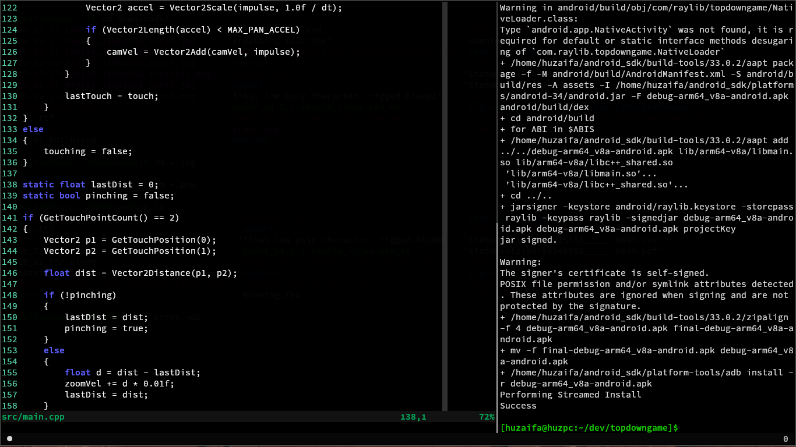
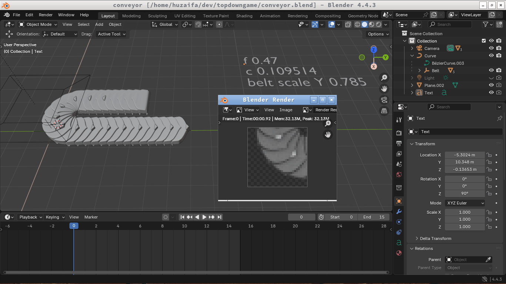
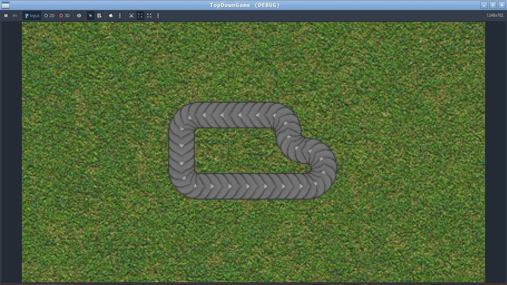
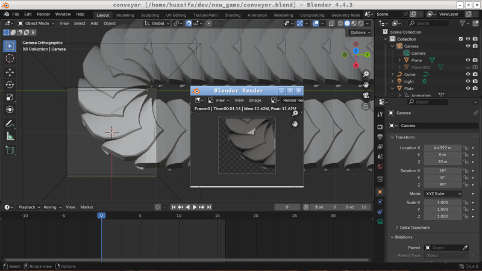
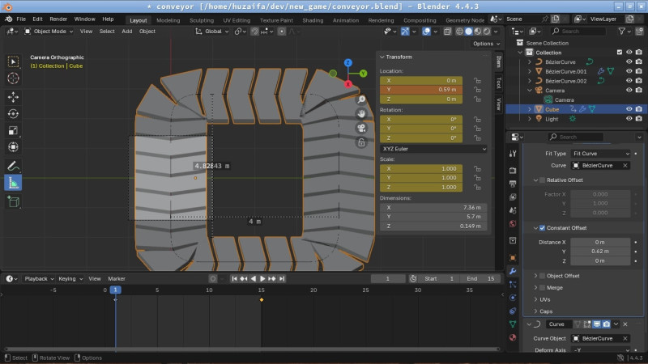
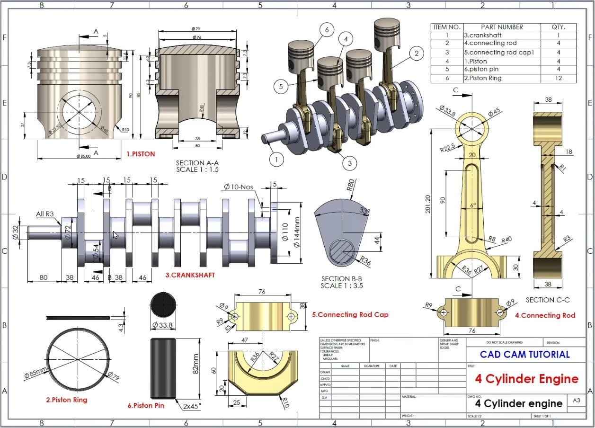

Here are my daily thoughts, organized by date. Stuff not terribly important go in here rather than the blog.
Jan 03: Programmers are bad at deadlines...
Some news. I decided to, for now, put this automation game for hold. I know, I know. I was pretty ecstatic about it when I started working on it, thinking it will be finished in 6 months, at most. But boy I was in for a reality check. The primary thing holding me back was the game assets. It took forever to model and texture the machines, not counting my lack of experience in Blender. It took me ten days to model a conveyor belt and a mining drill, which weren't even textured properly and were the first draft.
I've been playing some Undertale these past few days, and looking at the game in its entirety, from the visuals to the writing to the music, it just feels so indie, so made from love. I've always wanted to build my own adventure RPG game, and I think this could be a good checkpoint to divert me to make it. Granted I'm not Toby Fox, I'm pretty bad at art, writing is not too high up, and don't even talk about music. But I think it's just the project to propel me forward into the fantastic world of gamedev. And about the scope of the project: it won't be too big; just something I can finish in 6-8 months of spare time every day.
Wrapping up, today didn't get a whole lot done. Just played around in Aseprite making some test game assets. Here is one I'm proud of (granted I referenced some sample sprites online):
Also, about the game engine: I'm thinking of Godot as I don't want to waste time reinventing the wheel here. For the factory-builder game I chose Raylib due to the constrains of that project, but here it's a simple RPG, so Godot's fine.
Jan 01: New year, new game assets
Happy new year! Today I mostly worked on creating some new game assets for my factory-builder game. I started by making a grass texture in GIMP. The test texture I've been using was pulled from the internet, and in this project I mostly aim to make all of the assets myself. Next I wanted to test out entities spanning multiple tiles, so I needed an entity that's not a belt (belts are single-tiled). So I decided to model a mining drill in Blender. I have never modeled a machine in Blender before, so the entire process was a good exercise of my rudimentary Blender skills.
Here are both of them, the drill unfinished:


Dec 31: Input system and beyond
Just finished work on the cross-platform input-system for the game I've been working on. I had some previous input-handling code lying around from a previous test project, but it wasn't very good at gestures like pinching, pinch-pan, etc. For this game I wanted full control of the camera to place stuff around the game world, so controlling the camera effectively was crucial.
The previous system was also not much better code-wise. I exclusively used global variables as states and modified them in various functions. So instead I scrapped all of it and rewrote most of the system again, only this time I really focused on the architecture of the whole system. This new input-system handles input in three layers:
- Raw input: the input supplied to us from Raylib is modified so that it's cross-platform and resolution-independent. I use a 1000 by 560 coordinate system independent of the user's resolution, and Raylib gives us pixel positions, so this layer converts it into virtual coordinates that the game can use.
- Gestures/PointerEvent: raw input is fed here and the result is a gesture/pointerevent structure. Gesture can be one of PAN, PINCH, NONE, and the pointerevent can be one of PRESS, RELEASE, NONE. I don't tackle keyboard input yet as I primarily intend to develop this game for mobile for now.
- Usage: the gestures are used to pan the camera, zoom in/out, scroll lists, etc.
Pretty happy with how the system turned out. Here is a rec of the game in action:
Dec 28: Raylib and porting to Android
Today I used the sprites I made yesterday in Raylib just to test out the waters. I moved away from Godot due to some technical limitations:
- Using a general game engine for this type of game (factory-builder) which will mainly be procedurally generated and modified by the user, is the wrong choice. Instead I could work much faster with a lean game framework like Raylib where it doesn't fight me every step of the way.
- There are too many things in Godot which are node-based and costly for objects on conveyor belts which could run into hundreds of thousands. So the traditional node/object-based approach is not going to cut it for this style of large sprite-count game.
I also implemented a simple panning/zooming camera controller for mobile gameplay. Due to this, I also had to port this game to Android. Fortunately, I had some scripts lying around to make it really easy to build an .apk from a Raylib codebase (I was working on a different game not too long ago just for fun), so it was really easy to build it for mobile. The controller's still finicky1, but I'll fix it tomorrow. I'm tired.

Dec 27: Belts Done!
My work on making the belts is done (at least for now). I made some changes to the rendering pipeline because of some difficulties I faced:
- I no longer render at 20 degrees -- it is top-down for now. There were issues with tiling the curved and straight belts, so I scrapped 3D-projection and instead went 0 degrees straight down.
- Shadows and shading are removed. I just render one curved section and a straight section and flip/rotate the sprite in the engine to permutate all possible ways to route belts. So when flipping/rotating, shadows changed their angle, which was incorrect, so I removed them altogether for now. I could render the shadows separately, but it's not the most important thing right now.
PS: In Blender, to place the curved-modifier object at the curve's starting position, you need to align the origins of both of them before adding the modifier to the object.


Dec 20: Conveyor Belts!
A good conveyor belt system is the beating heart of a factory-builder game. So I put in a lot of time to make the belts look good. I use a pipeline similar to Factorio where every in-game entity is first modeled in Blender, then pre-rendered into a 2D spritesheet with all the lighting baked in. It took me two days to figure out how to make the belts tileable, animatable, and rendered correctly. Today I completed the counter-clockwise section of the belt, and tomorrow I will finish the clockwise section. The tileability will need to be taken into account for both. This is difficult because of the curvature of the belt -- the tiledness changes between turns of the belt.
While rendering the models into a spritesheet, I ran into a "bug". The portion where the model was clipped from the background was repeatedly rendering with a blurry edge even though I put a Holdout object for it. After debugging the issue for three hours, it turned out that due to sub-pixel limitations, the orthographic scale has to be set just right for it to be completely opaque. I still don't fully understand the reason, but I'll look into it tomorrow.

Dec 17: Starting work on a new factory-builder game
It's been a while since my last journal entry. Due to my endsems I didn't get much free time to work on my projects. Anyway, I recently decided to make a small game similar to those automation games like Factorio. I don't have much experience in gamedev apart from small beginner games in Unity, so it will be fun to make something playable on my own.

Nov 20: Implementing a YAML Parser
Today I wanted to make some changes to my markdown format which I use for my blog. Specifically, I wanted a cleaner way to specify metadata for a page. Right now to specify the title, I just use a heading H1 tag (#). It cannot show tags, date or anything else.
I wanted something like front-matter which uses triple hyphen (---) blocks at the start of the page to specify things pertaining to the page in a YAML format. So I had to write a YAML parser, which I did.
I only implemented a subset of YAML, enough for lists, objects, strings, numbers and nothing more. Then browsing the web I came across an article aptly titled The yaml document from hell1. To summarise, the author explains why YAML is a poor choice for a markup language, due to its complex syntax and ever-changing/inconsistent versions.
I knew about some of the drawbacks of YAML beforehand. But after reading the article and the YAML spec sheet, I had second thoughts about using YAML in my blog. Fortunately, front-matter only uses a tiny subset of the markup, so that's a little reassuring. It's still not set in stone -- I will have to think about whether to keep using YAML or maybe change to something else.
Nov 11: Making a 4-cylinder engine in SolidWorks
While browsing YouTube today I came across some SolidWorks videos in my recommended partly because yesterday after a long time I revisited my CAD itch. While watching some of them (one of them was a CAD 1v1 contest!) a video on a 4-cylinder engine popped up. When I saw the pistons moving in the preview, I knew I'd spend the next three hours modeling it myself. This was the blueprint that was shown at the beginning of the video:

I first had to model the individual parts of the engine (piston head, connecting rod, rod cap, crankshaft, etc). After modeling every part, the next step is assembling all the parts into an assembly.
Three hours in, I finally made it.

Time to rotate the crankshaft and see the engine come to life!
Nice! It would be better if the schematic also included parts of the engine head (camshaft, valves, etc). Nonetheless, I had fun making it; maybe I'll measure out and model the head parts myself. Here are my CAD files for reference.
Nov 2: A breadboard number guessing game
For my end semester DE/AC project, I chose to make a simple number guessing game using nothing but a few primitive ICs.

Hold the "roll" button to roll numbers 0-9 on the 7-segment display. When released, the counter starts slowing down until it lands on a number that the user needs to guess. Here it is in action:
Here are few of the components I used:
- 555 Timer: used in astable mode -- sends clock pulses to the counter to count up at every tick.
- CD4026 (5-stage Johnson Decade Counter & Output Decoder): this IC does two things at once -- it counts up at every clock tick, looping to 0 when it gets to 9, and then decoding it into 7-bits for the 7-segment display to read.
- NPN transistor: acts as a buffer to cleanly supply clock ticks to the counter.
How does the frequency decay with time? When the button is pressed, the 100uF is shorted to Vcc and starts charging. Now when the button is released, it starts discharging through the 820K resistor; as the voltage on the capacitor decreases, the frequency of the clock pulses decrease until it reaches zero.
For completeness, here is the circuit diagram I made to verify the circuit before putting it on the breadboard:

Oct 20: Seb's Digital Logic Simulator
'How Do Aircraft Systems Communicate?'. It's been a while since I got a Ben Eater video recommended in my YT feed. Aha! I totally forgot about designing my own 8-bit "Computer" back when I blazed through his breadboard computer videos!
After seeing his SAP-1 Simple As Possible computer come to life, I too wanted to learn how to make one on my own. Cut to today, when I once again revisited his videos -- and most importantly -- found another great resource for learning this stuff: Sebastian Lague. I followed him from his Ludum Dare days.
Lague's videos on his Logic Simulator were very well thought out and executed. Even though I knew most of what he explained from Eater, his "why" approach where he first comes up with the easiest solutions and refines it so as to make us understand the reasons better, were so satisfying to watch -- wish more teachers would teach students that way.
I wondered how much work would it take to recreate his Logic Simulator in C with SDL/raylib. So I setup a hello-world raylib project with a 2D camera and some zooming/panning. Tomorrow I'll work on the graphics side for a bit before starting on the main simulator code.
Oct 18: WM Hopping
When I distro-hopped from Arch to NixOS about two months ago, for fun I also changed my WM from openbox to qtile. I last used a tiling WM about two years ago (dwm from suckless) and migrated to openbox then 'cuz I didn't appreciate the philosophy. I've now used qtile for about two months, and I'm going back to openbox.
Why? tmux. I mainly switched to qtile because I needed a quick way to position my terminals without having to use the mouse again and again. Now that I'm multiplexing terminals under a single window, I frankly have no use for a tiling WM any more.
Why didn't I use tmux before? I did. Roughly about ~3-4 years ago. I just dipped my toes in to see what's so special. But at that time I was using Emacs as my main editor and most of my workflow didn't require a separate terminal -- Emacs had it all (compiling, gitting, searching, etc). Now that I use vim (after a brief stunt using my own editor), I require 2-4 terminals at any time so using tmux is a no-brainer.
Of course, I also changed some things along with the WM. qtile had it's own status bar and openbox does not, so I reinstalled tint2. For notifications, I use dunst with notify-send (libnotify).
There is a subtle bug where when I download something from firefox and click the button to open the containing folder, it opens the terminal emulator, not the file manager (PCManFM). Yet when I start the file manager beforehand and then click the button in firefox, it correcly opens in it. I'll have to look into it.
Oct 14: College Math
To even begin reading Spivak's Calculus, I need to have a few prerequisites under my belt:
- Know Pre-algebra, Algebra, Trig, Pre-calculus. Every engineering student has done this at some point.
- Calc I, II, III on a surface level—just enough to solve problems, no proofs or derivations or anything. Recommended: Paul's Online Notes or Michel van Biezen's ~13hr YouTube playlist.
- Proof writing. Recommended: How to Prove It: A Structured Approach by Daniel J. Velleman
Currently I'm working on finishing the 2nd part. Even though I'm in Semester III in my college which involves Calc III, I feel like we weren't taught stuff properly, which is why I'm relying on Paul's notes to get basics of Calc 2 and 3 out of the way so that I can move on to step 3.
Sep 29: Learning the keyboard -- and math
On the first few lessons from the Udemy piano course. Before this I could play melodies with single hand without movement. Now the first full lesson incorporates some bass notes too. What helped me was to individually practice both hands until I'm fairly confident that I could play them without thinking too much. Then after however many tries, playing with both hands should be much easier.
I'm also starting to get a hang of which notes are which on the keyboard. The accidentals are not yet introduced in the course, so I'm gonna hold off till later on that.
Pitch recognition by ear is tricky. Some say it's given to you by birth, while others assert it can be taught just like any other skill. I think it's a mix of both. All the "pitch perfect" musicians I've come across have done some music in their childhood, that helped them develop this "natural-born" talent gradually.
One of the ways pitch recognition can be done without being born with it, is to link a note with the first note of any song. For example, Hans Zimmer's No Time To Caution has a memorable A B C D melodic arrangement, which can be used to recognize other similar notes.
Also, about a week ago I came across a really cool vector calculus problem solution, thought I'd share it here:
$$\text{Prove that }\nabla^2 f(r) = \frac{d^2 f}{dr^2} + \frac{2}{r} \frac{df}{dr}$$Conventions used: \(\vec{r} = \) vector and \(r = \) magnitude of \(\vec{r}\).
$$\begin{align*} y &= \text{LHS}\\ &= \nabla^2 f(r)\\ &= \nabla \cdot \nabla(f(r))\\ &= \nabla \cdot [f'(r)\nabla(r)]\\ &= \nabla \cdot \left[f'(r)\frac{\vec{r}}{r}\right]\\ &= f'(r)\nabla \cdot \left[\frac{\vec{r}}{r}\right] + \frac{\vec{r}}{r}\cdot \nabla f'(r)\\ &= f'(r)\frac{r\nabla \cdot \vec{r} - \vec{r}\cdot \nabla r}{r^2} \\ &\quad+ \frac{\vec{r}}{r} \cdot \left( f''(r)\frac{\vec{r}}{r} \right) \end{align*}$$Same as the first step:
$$\begin{align*} y &= f'(r) \frac{r \cdot 3 - \vec{r} \cdot \frac{\vec{r}}{r}}{r^2} + \frac{r^2}{r^2} f''(r)\\ &= f'(r) \cdot 2 \frac{r}{r^2} + f''(r)\\ &= f''(r) + \frac{2}{r} f'(r)\\ &= \text{RHS} \end{align*}$$QED.